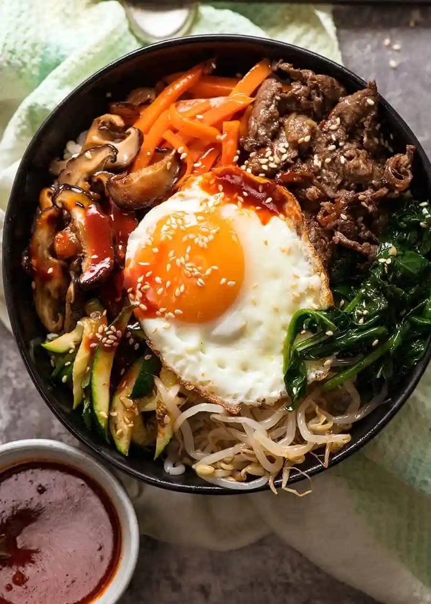

Michael's Bibimbap Recipe

Description
Bibimbap is one of the most well known Korean dishes. A rice bowl topped with all sorts of seasoned sautéed vegetables, marinated meat (usually beef), a fried egg sunny side up, finished with a sprinkle of sesame and generous dollop of a sweet-spicy-savoury Bibimbap sauce.
Ingredients
- Rice
- Gochujang
- Red Pepper
- Korean Pepper Flakes
- Eggs
- Sesame Oil
- Kimchi
- Squash
- Sesame seeds
- Spinach
- Carrots
Steps
- Cook rice
- Mince 3 cloves of garlic
- Slice red pepper into strips
- Slice squash into matchsticks
- Sweat all veggies
- Stir fry all veggies for around one minute, adding salt, garlic, and sesame oil as you stir fry
- Add a small amount of sesame oil to your rice and mix well
- Add desired amount of rice to earthenware pot
- Add desired amount of each of the veggies on top of the rice
- Remove egg white from one egg and add yolk only to the middle of the pot
- Place covered pot over medium heat for 5-7 minutes
- Enjoy!